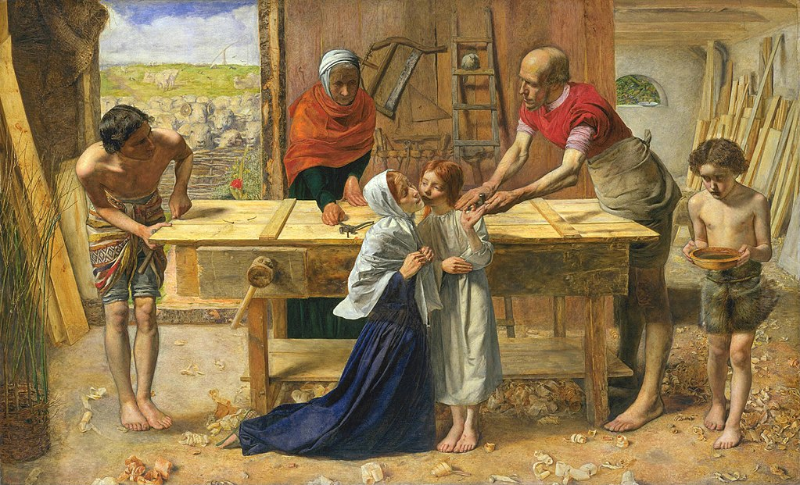

<head>
<meta charset="UTF-8" />
<meta name="keywords" content="drawing, painting" />
<meta name="description" content="drawings by Sunjy" />
<title>Sunjy</title>
<link rel="shortcut icon" type="image/x-icon" href="../../mImages/mCommon/favicon.ico" media="screen" />
<link rel="stylesheet" type="text/css" href="../../mCsses/mCommon/mCssA.css" />
<link rel="stylesheet" type="text/css" href="../../mCsses/mCommon/mCssB.css" />
<link rel="stylesheet" type="text/css" href="../../mCsses/mCommon/mCssC.css" />
<link rel="stylesheet" type="text/css" href="../../mCsses/mCommon/mCssD.css" />
<link rel="stylesheet" type="text/css" href="../../mCsses/mContent/mCssA.css" />
<link rel="stylesheet" type="text/css" href="../../mCsses/mContent/mCssB.css" />
<link rel="stylesheet" type="text/css" href="../../mCsses/mContent/mCssC.css" />
<link rel="stylesheet" type="text/css" href="../../mCsses/mContent/mCssD.css" />
</head>
<script type="text/javascript" src="../../mScripts/mContent/mContentAA.js" /></script>
<script type="text/javascript" src="../../mScripts/mContent/mContentAB.js" /></script>
<script type="text/javascript" src="../../mScripts/mContent/mContentAC.js" /></script>
<script type="text/javascript" src="../../mScripts/mContent/mContentAD.js" /></script>
<script type="text/javascript"></script> 
<script type="text/javascript">
document.write('<div class="mImgAbsolute"></div>');
/*
document.write('<p class="mFontSizeBColor" />From a white paper...</p>');
document.write('<table class="center"><tr><td>');
document.write('');
document.write('</td></tr></table>');
*/
</script>


<script type="text/javascript">
document.write('<p class="mFontSizeBColor" />Christ in the House of His Parents </p>');
document.write('<p class="mFontSizeSColor" />“Christ in the House of His Parents” by John Everett Milla depicts the Holy Family in Joseph’s carpentry workshop. The painting centers on the young Jesus, who has cut his hand while assisting Joseph in his workshop.<br><br>The composition has a plethora of symbolism representing the theological aspects of this religious subject. The most interesting aspect of this painting was how controversial it was when it was first exhibited.<br><br>It received many negative reviews because of its realistic depiction of a carpentry workshop, especially the dirt and wood shavings on the floor.<br><br>The portrayal of the Holy Family, in the painting, was in dramatic contrast to the general view of Jesus and his mother, traditionally represented in Roman togas and traditional costumes.<br><br>Charles Dickens accused Millais of portraying Mary as an alcoholic who looks:<br><br>“…so hideous in her ugliness.”<br><br>Critics also objected to and criticized this new and unique portrayal of Jesus.<br><br>Because of the controversy, Queen Victoria asked for the painting to be taken to Buckingham Palace so that she could view it in private.<br><br>The controversy catapulted the previously obscure Pre-Raphaelite Brotherhood to notoriety and was a significant contributor to the debate about Realism in the arts.<br><br>The painting’s use of symbolic realism led to a broader movement in which composition was combined with realistic detail.<br><br>The religious symbols in the painting include:<br>•The ladder, leaning against the back wall, referring to Jacob’s Ladder<br>•The dove on the ladder represents the Holy Spirit<br>•The sheep seen through the door represent the future Christian flock<br>•Jesus’ bleeding hand symbolizes the stigmata and foreshadowing Jesus’ crucifixion. Some of the blood has fallen onto his foot.<br>•A young boy, who would later be known as John the Baptist, brings in water to wash the wound, symbolizing the later baptism of Christ<br>•Joseph assistant represents Jesus’ future Apostles, witnesses this event<br></p>');
document.write('<table class="center" /><tr><td>');
document.write('<br>The composition has a plethora of symbolism representing the theological aspects of this religious subject. The most interesting aspect of this painting was how controversial it was when it was first exhibited.<br><br>It received many negative reviews because of its realistic depiction of a carpentry workshop, especially the dirt and wood shavings on the floor.<br><br>The portrayal of the Holy Family, in the painting, was in dramatic contrast to the general view of Jesus and his mother, traditionally represented in Roman togas and traditional costumes.<br><br>Charles Dickens accused Millais of portraying Mary as an alcoholic who looks:<br><br>“…so hideous in her ugliness.”<br><br>Critics also objected to and criticized this new and unique portrayal of Jesus.<br><br>Because of the controversy, Queen Victoria asked for the painting to be taken to Buckingham Palace so that she could view it in private.<br><br>The controversy catapulted the previously obscure Pre-Raphaelite Brotherhood to notoriety and was a significant contributor to the debate about Realism in the arts.<br><br>The painting’s use of symbolic realism led to a broader movement in which composition was combined with realistic detail.<br><br>The religious symbols in the painting include:<br>•The ladder, leaning against the back wall, referring to Jacob’s Ladder<br>•The dove on the ladder represents the Holy Spirit<br>•The sheep seen through the door represent the future Christian flock<br>•Jesus’ bleeding hand symbolizes the stigmata and foreshadowing Jesus’ crucifixion. Some of the blood has fallen onto his foot.<br>•A young boy, who would later be known as John the Baptist, brings in water to wash the wound, symbolizing the later baptism of Christ<br>•Joseph assistant represents Jesus’ future Apostles, witnesses this event<br>" />');
document.write('</td></tr></table>');
</script>


